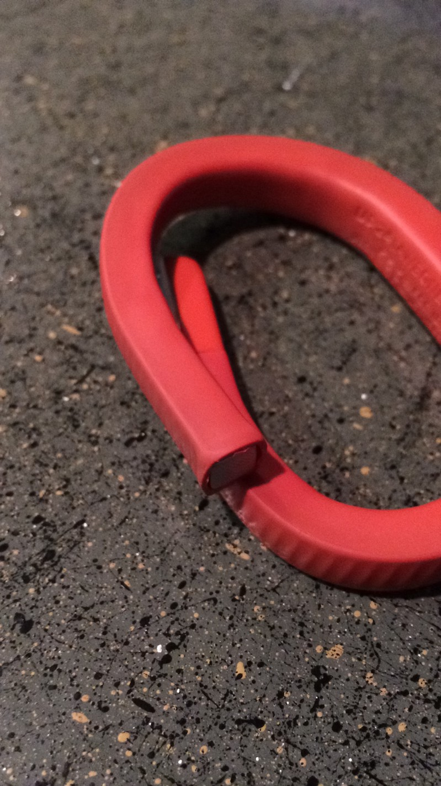

OK, so I don’t feel that desperate, I promise. I’ve only felt anxious and nervous and wrong a couple of times today. And a couple more times yesterday. OK? And each of the six days before that, which is perfectly fine. Right? Right?
Maybe I just need to get this situation off my chest, and I won’t feel this way.
So for Christmas six months ago, I decided to get a fitness wearable. I’m not pleased with the shape my body is in as my body fat percentage is really where I don’t want it to be, and at school I don’t sleep as much as I should, and I never had time to work out. So, I thought that getting data on my sleep and physical activity would be useful. I also liked the idea of having a smart alarm to wake me up at the “optimum” point in my sleep cycle. Looking over reviews online, I decided to get a Jawbone UP24, because it actually looked good, and tracked the basics at a good price.
After having to get a replacement because the original band didn’t work, I gave the UP24 a shot at working in my life. Immediately, I had constant feedback on what I was doing, at all times. Every morning, I had new data to pour over on my sleep and sleep cycles. Every evening, the results of a new game to beat my steps goal.
Picture of myself and the companion, out for the day with matching flowers
It was like my Twitter feed: my UP app became a hub of new information that was different every hour — the perfect complement to the other content I was checking obsessively. Unlike the sick Taylor Swift BuzzFeed quiz on whether Eddy Cue or Calvin Harris is right for her, or my new group message notifications from my friend group back in Michigan and the group in Texas and the Facebook notifications from Hackathon Hackers and -
Oh, right. So, my UP app was different. The app was about meeting my goals, keeping track of where I am physically, and staying on track for becoming healthier and being fit. I absolutely loved beating my step count, being under on my calorie count for the day (food was something I just started logging in the last month), and seeing my sleep quality statistics. My band was more then on my wrist: it felt more like a never-resting companion that would never leave, supporting me on my way to the better health I wanted.
This love wasn’t perfect. My UP24 wasn’t waterproof, so it didn’t accompany me to the shower. The band’s orange skin also got dirty quickly, and in the last week became loose and could be shifted to completely overlap the button at one end. But no love is, right?
Six months in a statement is an interesting time. It’s right after one of the two make-or-break points, I think, which is: is this relationship going to be long or short-term? Around three or four months, there’s been enough time for the two sides to become familiar with one another’s foibles, flaws, and favorites — emotionally, mentally, even physically.
I was six months in when the band left me. I took it off to play sweaty sand volleyball. I set it in my shoes… and came back an hour later to find it lying on the dirty ground. No problem, I’ll just briefly wash it off when I get home, I said as I put it somewhere and - that was the last time I saw it.
No big deal, I thought. I don’t need my fitness band, and it’s not as expensive as my iPhone or Mac — man, both of which I’d be up a creek without. Suddenly, I had this hole I could fill with another gadget. Hey, this means I have an excuse to get an Apple Watch. Or I could buy another band. Or I could be responsible this summer and save that $100+ for university. Or I could simply relax without one. I lived without the band once, I can do it again for a while. It’s not essential to my life.
I quickly put the matter of losing the band out of my mind for the rest of the day, distracted by volleyball and basketball and friends, and I hadn’t thought about it until I went to bed that night.
When I first became acquainted with my band, my arms felt awkward — visually lopsided by the vibrant orange wristband. Over the first three months of wearing the band, the difference in appearance gradually became a new normal.
As I was putting on pajamas, suddenly it hit me: how disorienting it was not to visibly see the band against my arm.
I laid in bed, and immediately reached to press the button to put the tracker in sleep mode — no, it wasn’t there. I immediately felt disorientated. It honestly felt like a key part of me was missing. I didn’t get why I felt this way then about a simple band, but that’s how I felt. And still do.

When I finally woke up in the morning, turned off my alarm, and reached to press the button — no, it still wasn’t there. I felt confusion… and fear. Fear that this morning’s sleep wouldn’t be tracked, and there was now officially a hole in my data. My weekly average was messed up, my spot in the top 20% of UPers for steps in jeop— no, stop. Colin. Shake it off, just like Tay would do. It’s just a piece of plastic, fiberglass and silicon. This band is not like I had lost a relationship with someone, just something. It wasn’t, it couldn’t, it shouldn’t be as important. Right?!?
As part of routine, this all went on while I got ready for a morning shower. I simultaneously tried to grab the band and take it off without look — no! Why did I keep on going for it? How did walking into the bathroom cause a Pavlovian response to play with the band?
I took my shower, trying to refocus for work that day. I got out, dried myself off, brushed my teeth, and put on deodorant. Out of pure habit, before leaving, I looked frantically around my bathroom for a neon orange circle. I was used to having to search for things for a long time, and being flummoxed by temporarily losing important things before finding them in the last time I had seen them. But this time, I had no such last place. The band was gone. It was truly gone.